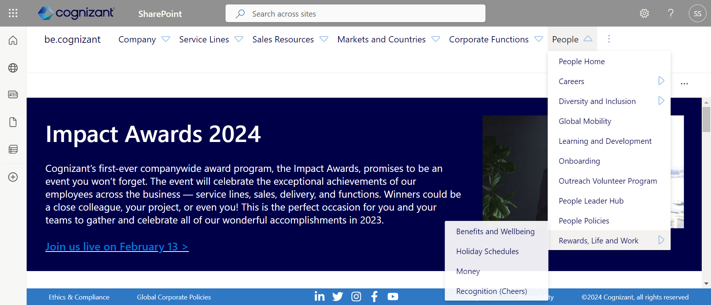

-
header features Corporate Functions
4:42:41 pm / 00:01:45:367 Pass
header features Corporate Functions
02.09.2024 4:42:41 pm 02.09.2024 4:44:26 pm 00:01:45:367 · #test-id=1PassValidation of Corporate Functions headerGiven The user checks header option Corporate Functions has iconWhen User clicks on Corporate Functions and print the list showingThen If user finds icon on any list item it hovers on it and prints it recursiverlyPassValidation of legal and corporate affairs in Corporate functions headerGiven The user clicks on corporate functions headerWhen user finds Legal and corporate affairs and hover over it and clicks on Ethics & ComplianceAnd verify the page legal and corporate affairsThen prints the list of Resources available -
Company header features validation
4:44:26 pm / 00:00:22:037 Pass
Company header features validation
02.09.2024 4:44:26 pm 02.09.2024 4:44:48 pm 00:00:22:037 · #test-id=22Passvalidation of company headerWhen the user checks header option company has iconWhen user clicks on company and print the list showingThen user can hover if any list item has Triangle icon -
login features validation
4:44:48 pm / 00:00:17:516 Pass
login features validation
02.09.2024 4:44:48 pm 02.09.2024 4:45:06 pm 00:00:17:516 · #test-id=32Passvalidation of be userGiven the user navigated to the cognizant pageWhen the user clicks on user iconThen user can validate the mail contains @cognizant.com -
header features People
4:45:06 pm / 00:00:15:707 Fail
header features People
02.09.2024 4:45:06 pm 02.09.2024 4:45:21 pm 00:00:15:707 · #test-id=42Failvalidation of People headerGiven the user checks header option has iconWhen user clicks on People and print the list showingThen If user finds icon on any list item it hovers on it and prints itstepDefinitions.Hooks.addScreenshot(io.cucumber.java.Scenario)validation of People header -
sales header features validation
4:45:21 pm / 00:00:40:525 Pass
sales header features validation
02.09.2024 4:45:21 pm 02.09.2024 4:46:02 pm 00:00:40:525 · #test-id=52Passvalidation of sales headerGiven the user checks header option sales has iconWhen user clicks on sales and print the list showingThen user can hover if any list item has icon -
header features Service Lines
4:46:02 pm / 00:00:12:610 Fail
header features Service Lines
02.09.2024 4:46:02 pm 02.09.2024 4:46:15 pm 00:00:12:610 · #test-id=62Failvalidation of Service Lines headerGiven the user checks header option Service Lines has iconWhen user clicks on Service Lines and print the list showingThen if user finds icon on any list item it hovers on it and prints itstepDefinitions.Hooks.addScreenshot(io.cucumber.java.Scenario)validation of Service Lines header
-
org.openqa.selenium.StaleElementReferenceException
2 tests
org.openqa.selenium.StaleElementReferenceException
2 failedStatus Timestamp TestName Fail 16:45:19 pm Then If user finds icon on any list item it hovers on it and prints it header features People.validation of People header.Then If user finds icon on any list item it hovers on it and prints itFail 16:46:12 pm Then if user finds icon on any list item it hovers on it and prints it header features Service Lines.validation of Service Lines header.Then if user finds icon on any list item it hovers on it and prints it
-
@sanity
7 tests
@sanity
5 passed 2 failedStatus Timestamp TestName Pass 16:42:41 pm Validation of Corporate Functions header header features Corporate Functions.Validation of Corporate Functions headerPass 16:44:07 pm Validation of legal and corporate affairs in Corporate functions header header features Corporate Functions.Validation of legal and corporate affairs in Corporate functions headerPass 16:44:26 pm validation of company header Company header features validation.validation of company headerPass 16:44:48 pm validation of be user login features validation.validation of be userFail 16:45:06 pm validation of People header header features People.validation of People headerPass 16:45:21 pm validation of sales header sales header features validation.validation of sales headerFail 16:46:02 pm validation of Service Lines header header features Service Lines.validation of Service Lines header
Started
Feb 9, 2024 04:42:40 pm
Ended
Feb 9, 2024 04:46:15 pm
Features Passed
4
Features Failed
2
Features
Scenarios
Steps
Timeline
Tags
| Name | Passed | Failed | Skipped | Others | Passed % |
|---|---|---|---|---|---|
| @sanity | 5 | 2 | 0 | 0 | 71.429% |